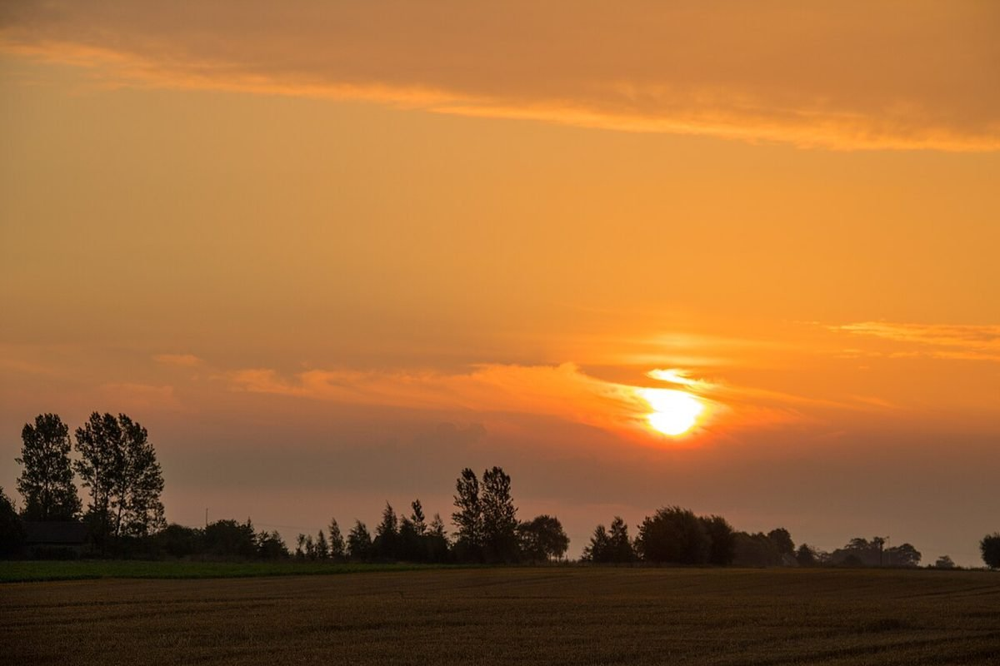
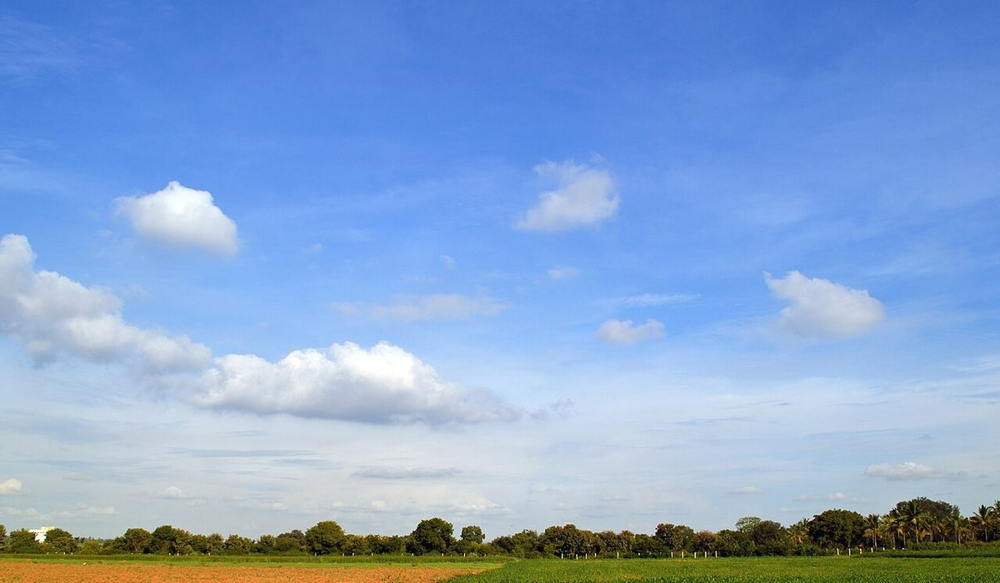
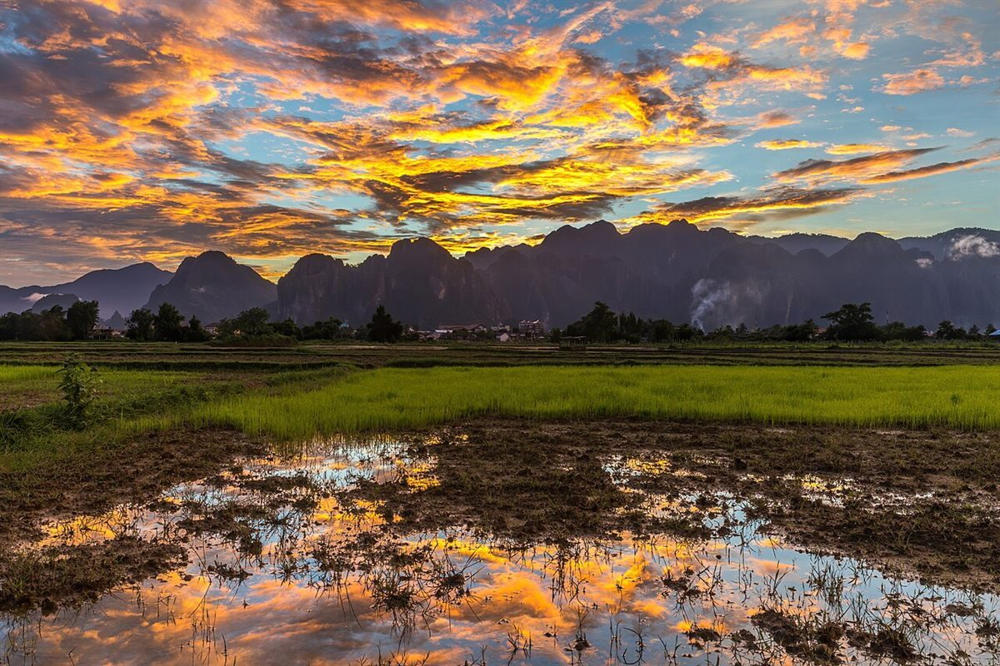

SAMPLE これは制作見本です。掲載内容は実際の店舗情報ではない部分を含みます。
岩手県陸前高田市のカフェ
cafe mieuxカフェ ミュー
岩手県陸前高田市高田町森の前にあるカフェ、cafe mieuxのご案内ページです。メニューや営業時間などは準備中です。詳しくはお電話かInstagramでお問い合わせください。
デザインの案(制作側の案) 朝・昼・夕と、空の色を順にたどるページにしました。お店の理念や特徴を示すものではありません。
写真はフリー素材のイメージです。cafe mieuxの実際の店内・メニューではなく、他の地域で撮影されたものや撮影地が不明なものを含みます。
朝
朝の空気を思わせる色
霧のかかった景色と、朝日の差す景色の写真を並べました。いずれもイメージです。


昼
ひと息つく、昼の青
青空と雲の写真です。お店の周りの景色ではありません。


夕
夕方の色
空が色づく時間帯のイメージです。営業時間は準備中のため、お問い合わせください。


お店の情報
- 住所
- 〒029-2205 岩手県陸前高田市高田町森の前475
地図を見る - @powerstone_cafe_mieux
- 営業時間
- 準備中(お問い合わせください)
- 定休日
- 準備中(お問い合わせください)